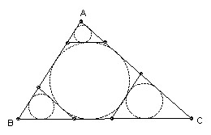

Problem A3
Triangle ABC has sides a, b, c. Tangents to the inscribed circle are constructed parallel to the sides. Each tangent forms a triangle with the other two sides of the triangle and a circle is inscribed in each of these three triangles. Find the total area of all four inscribed circles.
Solution

This is easy once you realize that the answer is not nice and the derivation a slog. Use r = 2·area/perimeter and Heron's formula: area k is given by 16k2 = (a + b + c)(b + c - a)(c + a - b)(a + b - c).
The small triangles at the vertices are similar to the main triangle and smaller by a factor (h - 2r)/h, where h is the relevant altitude. For the triangle opposite side a: (h - 2r)/h = 1 - 2(2k/p)/(2k/a) = 1 - 2a/p = (b + c - a)/(a + b + c).
Hence the total area is ((a + b + c)2 + (b + c - a)2 + (c + a - b)2 + (a + b - c)2)/(a + b + c)2 pi r2 =
(a2 + b2 + c2).pi.(b + c - a)(c + a - b)(a + b - c)/(a + b + c)3.

Solutions are also available in: Samuel L Greitzer, International Mathematical Olympiads 1959-1977, MAA 1978, and in István Reiman, International Mathematical Olympiad 1959-1999, ISBN 189-8855-48-X.
© John Scholes
jscholes@kalva.demon.co.uk
25 Sep 1998
Last corrected/updated 26 Sep 2003